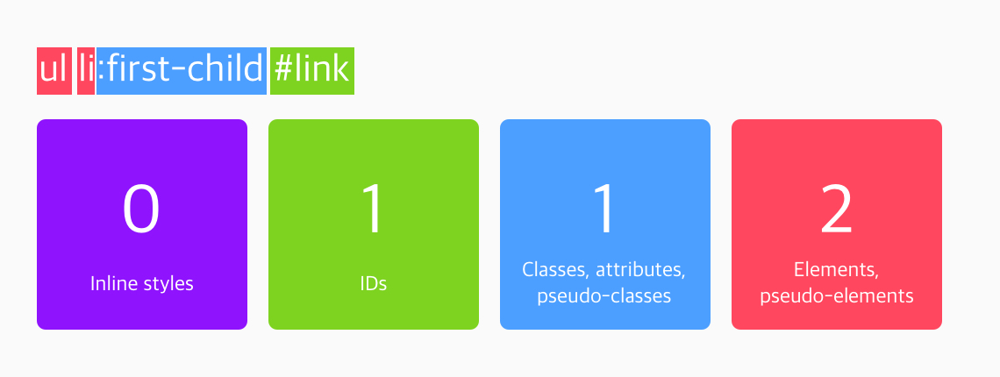

css는 서식을 적용할 때 첫줄부터 적용하고, 아래줄에 있는 서식을 순차적으로 내려가면서 적용한다. 이것을 cacading이라고 하며, 만약 부모태그에 서식이 적용되어 있다면 부모의 서식을 기준으로 상속받아 아래 요소가 서식이 적용되는데, 이런 우선순위 규칙을 스타일 오버로딩(style overloading)이라고 한다.
!important(10,000) > inline(1,000) > #id(100) > .class(10) > tag(1) > 외부스타일 서식 순으로 적용
예1) ul#primary-nav li.active은 명시도 몇점? 112점
예1) p > span {color:blue;} 와 div span{color:red;}은 명시도 몇점? 2점